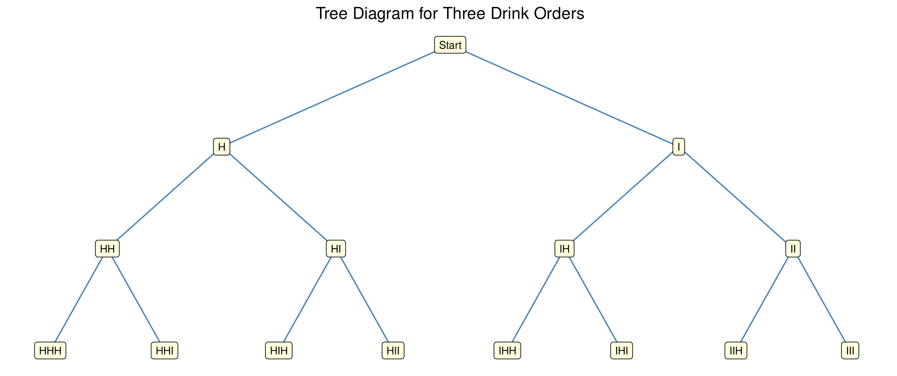
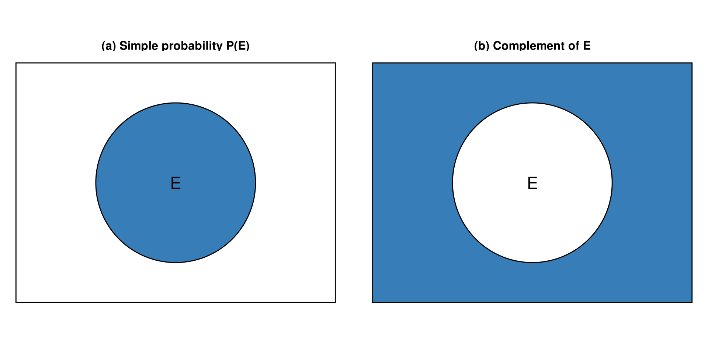
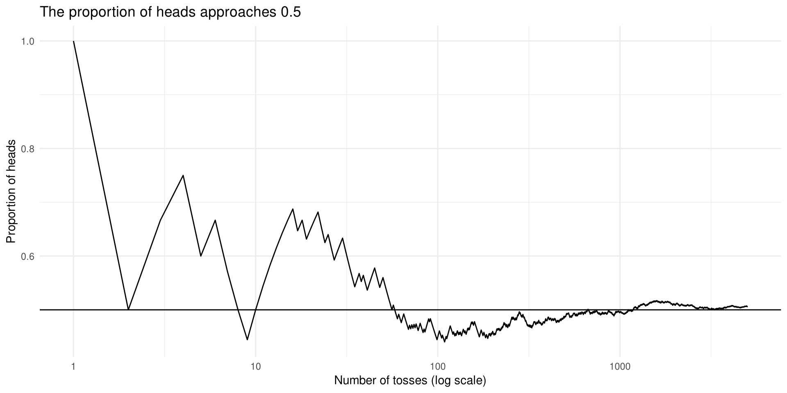
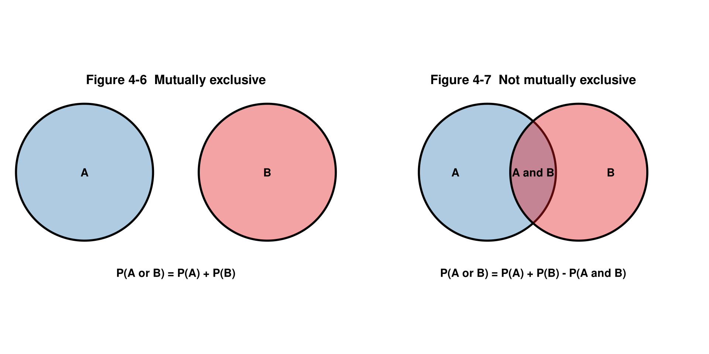

[1] 36Statistics
Chapter 4: Probability and Counting Rules
Yu-You Liou
Shih Chien University
2026-10-08
Overview
Chapter 4 explains probability and the counting rules used to count outcomes.
| Section | Topics |
|---|---|
| 4-1 | Sample spaces; classical, empirical and subjective probability; complements; law of large numbers |
| 4-2 | Mutually exclusive events; addition rules 1 and 2 |
| 4-3 | Independent and dependent events; multiplication rules 1 and 2 |
| 4-4 | Fundamental counting rule; factorial notation; permutations; combinations |
| 4-5 | Probability and counting rules combined |
Chapter Objectives
After completing this chapter, you should be able to
- Determine sample spaces and find the probability of an event, using classical probability or empirical probability.
- Find the probability of compound events, using the addition rules.
- Find the probability of compound events, using the multiplication rules.
- Find the conditional probability of an event.
- Find the total number of outcomes in a sequence of events, using the fundamental counting rule.
- Find the number of ways that r objects can be selected from n objects, using the permutation rule.
- Find the number of ways that r objects can be selected from n objects without regard to order, using the combination rule.
- Find the probability of an event, using the counting rules.
Section 4-1: Sample Spaces and Probability
Basic Concepts
Processes such as flipping a coin, rolling a die, or drawing a card from a deck are called probability experiments.
Probability Experiment and Outcome
A probability experiment is a chance process that leads to well-defined results called outcomes.
An outcome is the result of a single trial of a probability experiment.
Sample Space
A sample space is the set of all possible outcomes of a probability experiment.
Some Sample Spaces
| Experiment | Sample space |
|---|---|
| Toss one coin | Head, tail |
| Roll a die | 1, 2, 3, 4, 5, 6 |
| Answer a true/false question | True, false |
| Toss two coins | Head-head, tail-tail, head-tail, tail-head |
Heads and tails are abbreviated H and T throughout this chapter. Probability theory also commonly assumes that the probability of a boy being born is \tfrac{1}{2} and the probability of a girl being born is \tfrac{1}{2}, although biological sex is not necessarily binary and the split varies from location to location.
Example 4-1
Rolling Two Dice
A green die and an orange die are rolled together and the pair of numbers is recorded. List the sample space and state how many outcomes it contains.
Back to Example 4-5
Example 4-1
Solution
Build the rectangular array
| Orange = 1 | Orange = 2 | Orange = 3 | Orange = 4 | Orange = 5 | Orange = 6 | |
|---|---|---|---|---|---|---|
| Green = 1 | (1, 1) | (1, 2) | (1, 3) | (1, 4) | (1, 5) | (1, 6) |
| Green = 2 | (2, 1) | (2, 2) | (2, 3) | (2, 4) | (2, 5) | (2, 6) |
| Green = 3 | (3, 1) | (3, 2) | (3, 3) | (3, 4) | (3, 5) | (3, 6) |
| Green = 4 | (4, 1) | (4, 2) | (4, 3) | (4, 4) | (4, 5) | (4, 6) |
| Green = 5 | (5, 1) | (5, 2) | (5, 3) | (5, 4) | (5, 5) | (5, 6) |
| Green = 6 | (6, 1) | (6, 2) | (6, 3) | (6, 4) | (6, 5) | (6, 6) |
There are 6 \times 6 = 36 outcomes in the sample space.
Example 4-2
Drawing One Card
One card is drawn from a well-shuffled standard deck and both its rank and its suit are recorded. Find the sample space for this experiment.
Example 4-2
Solution
Build the deck
There are 4 suits (hearts, diamonds, clubs, and spades) and 13 ranks in each suit (ace through king), so the sample space has 52 outcomes.
Example 4-3
Rolling a Die Three Times
A die is rolled three times. Each roll is recorded as a hit (H) if the number of spots is 5 or 6, and as a miss (M) otherwise. Find the sample space for the experiment.
Example 4-3
Solution
Use H for a hit and M for a miss
Each roll can be classified in two ways, so there are 2^3 = 8 possibilities.
first second third
1 H H H
2 M H H
3 H M H
4 M M H
5 H H M
6 M H M
7 H M M
8 M M MThe sample space is HHH, HHM, HMH, HMM, MHH, MHM, MMH, MMM.
Tree Diagrams
In Examples 4-1 through 4-3 the sample spaces were found by observation and reasoning. Another way to find all possible outcomes of a probability experiment is to use a tree diagram.
Tree Diagram
A tree diagram is a device consisting of line segments emanating from a starting point and also from the outcome point. It is used to determine all possible outcomes of a probability experiment.
Example 4-4
Three Drink Orders
The next three customers at a coffee chain each order either a hot drink (H) or an iced drink (I). Use a tree diagram to find the sample space for the sequence of three orders.
Back to Example 4-6
Example 4-4
Solution

The sample space is HHH, HHI, HIH, HII, IHH, IHI, IIH, III.
Events
An outcome is the result of a single trial. In many problems we must find the probability of two or more outcomes, so we distinguish between an outcome and an event.
Event, Simple Event, Compound Event
An event consists of a set of outcomes of a probability experiment.
An event with one outcome is called a simple event. A compound event consists of two or more outcomes or simple events — for example, getting an odd number when a die is rolled.
There are three basic interpretations of probability: classical probability, empirical (relative frequency) probability, and subjective probability.
Classical Probability
Classical probability uses sample spaces to determine the numerical probability that an event will happen. You do not actually have to perform the experiment. Classical probability assumes that all outcomes in the sample space are equally likely to occur.
Equally Likely Events
Equally likely events are events that have the same probability of occurring.
Formula for Classical Probability
The probability of any event E is
P(E) = \frac{\text{Number of outcomes in } E}{\text{Total number of outcomes in the sample space}} = \frac{n(E)}{n(S)}
where n(E) is the number of outcomes in E and n(S) is the number of outcomes in the sample space S.
Rounding Rule for Probabilities
Rounding Rule for Probabilities
Probabilities should be expressed as reduced fractions or rounded to three decimal places. When the probability of an event is an extremely small decimal, it is permissible to round the decimal to the first nonzero digit after the point — for example, 0.0000587 becomes 0.00006.
When probabilities are obtained from one of the tables in Appendix A, use the number of decimal places given in the table. Probabilities can also be expressed as percentages.
Example 4-5
Rolling Two Dice
When the two dice are rolled, find the probability that the two numbers add up to 5.
Use the sample space from Example 4-1.
Example 4-5
Example 4-6
Three Drink Orders
If the next three customers each order a hot or an iced drink, find the probability that exactly two of the three order an iced drink.
Use the sample space from Example 4-4.
Example 4-6
Solution
Count the outcomes with exactly two iced drinks
first second third
4 I I H
6 I H I
7 H I I[1] 0.375The three favourable outcomes are HII, IHI, and IIH, so the probability is \tfrac{3}{8} = 0.375.
The Words “And” and “Or”
In probability theory it is important to understand the meaning of the words and and or.
- And means “at the same time”. The probability of getting a queen and a heart on one draw is the probability of the queen of hearts.
- Or has two meanings. Finding a queen or a heart uses the inclusive or: the queen of hearts is counted in both cases, so there are 4 + 13 - 1 = 16 possibilities.
- Finding a queen or a king uses the exclusive or, because both events cannot occur at the same time: there are 4 + 4 = 8 possibilities.
Example 4-7
Drawing One Card
A card is drawn at random from a well-shuffled standard deck. Find the probability of getting
a. A diamond d. A ten
b. A black card e. A card ranked 2, 3, 4, or 5
c. The ace of spadesExample 4-7
Solution
Count each event in the 52-card deck
[1] 0.25[1] 0.5[1] 0.01923077[1] 0.07692308[1] 0.3076923P(\text{diamond}) = \tfrac{13}{52} = \tfrac{1}{4} = 0.25; P(\text{black}) = \tfrac{26}{52} = \tfrac{1}{2} = 0.5; P(\text{ace of spades}) = \tfrac{1}{52} \approx 0.019; P(\text{ten}) = \tfrac{4}{52} = \tfrac{1}{13} \approx 0.077; P(\text{rank 2 to 5}) = \tfrac{16}{52} = \tfrac{4}{13} \approx 0.308.
Probability Rules
Four Basic Probability Rules
- The probability of any event E is a number (either a fraction or a decimal) between and including 0 and 1: 0 \leq P(E) \leq 1.
- The sum of the probabilities of all the outcomes in a sample space is 1.
- If an event E cannot occur (i.e., the event contains no members in the sample space), its probability is 0.
- If an event E is certain, then the probability of E is 1.
When the probability of an event is close to 0, its occurrence is highly unlikely; near 0.5 there is about a 50-50 chance; close to 1 the event is highly likely to occur.
Example 4-8
Drawing a Card
All 13 hearts are removed from a standard deck. The remaining 39 cards are well shuffled and one card is selected. Find the probability of getting a heart.
Example 4-8
Example 4-9
Drawing a Card
The 13 hearts are removed from a standard deck. The remaining 39 cards are well shuffled and one card is selected. Find the probability that the card is not a heart.
Example 4-9
Complementary Events
Complement of an Event
The complement of an event E is the set of outcomes in the sample space that are not included in the outcomes of event E. The complement of E is denoted by \bar{E} (read “E bar”).
Rule for Complementary Events
P(\bar{E}) = 1 - P(E) \qquad \text{or} \qquad P(E) = 1 - P(\bar{E}) \qquad \text{or} \qquad P(E) + P(\bar{E}) = 1
If the probability of an event or the probability of its complement is known, then the other can be found by subtracting the probability from 1.
Example 4-10
Finding Complements
Find the complement of each event:
a. Selecting a month whose name begins with the letter J
b. Selecting a day of the week that falls on the weekend
c. Rolling two dice and getting a sum greater than 9
d. Selecting a digit from 0 through 9 that is oddExample 4-10
Solution
List the outcomes that are left over
[1] "February" "March" "April" "May" "August" "September"
[7] "October" "November" "December" [1] "Mon" "Tue" "Wed" "Thu" "Fri"[1] 2 3 4 5 6 7 8 9[1] 0 2 4 6 8a. Selecting a month whose name begins with F, M, A, S, O, N, or D. b. Selecting a weekday, Monday through Friday. c. Rolling two dice and getting a sum of 2 through 9. d. Selecting an even digit, including 0.
Venn Diagrams for Probability
The outcomes of an event and the outcomes of its complement make up the entire sample space, so P(E) + P(\bar{E}) = 1. Probabilities can be represented pictorially by Venn diagrams.

The rectangle represents the whole sample space, where P(S) = 1; the shaded region in panel (b) is P(\bar{E}).
Example 4-11
Delivery Speed
On an online marketplace, 58% of orders reach the buyer within 1 day, 31% take 2 days, and 11% take 3 or more days. If an order is selected at random, find the probability that it takes 2 or more days to arrive. (hypothetical data)
Example 4-11
Empirical Probability
The difference between classical and empirical probability is that classical probability assumes that certain outcomes are equally likely, while empirical probability relies on actual experience to determine the likelihood of outcomes.
Formula for Empirical Probability
Given a frequency distribution, the probability of an event being in a given class is
P(E) = \frac{\text{frequency for the class}}{\text{total frequencies in the distribution}} = \frac{f}{n}
This probability is called empirical probability and is based on observation.
Example 4-12
Payment Methods
An online store asked 80 shoppers which payment method they used for their most recent order.
Method Frequency
Credit card 32
Mobile wallet 28
Store cash 16
Bank transfer 4
80Find the probability that a shopper paid with a mobile wallet. (hypothetical data)
Back to Example 4-13
Example 4-12
Solution
Apply the empirical probability formula
credit_card mobile_wallet store_cash bank_transfer
0.40 0.35 0.20 0.05 P(\text{mobile wallet}) = \frac{28}{80} = \frac{7}{20} = 0.35
The relative frequencies are the empirical probabilities of the categories.
Example 4-13
Payment Methods
Using the survey of 80 shoppers from Example 4-12, find the following probabilities.
a. A shopper paid by credit card
b. A shopper paid by mobile wallet or store cash
c. A shopper used neither a credit card nor a mobile wallet
d. A shopper did not use a bank transferExample 4-13
Solution
Compute the four probabilities
a. P(\text{credit card}) = \tfrac{32}{80} = \tfrac{2}{5} = 0.4. b. \tfrac{28}{80} + \tfrac{16}{80} = \tfrac{44}{80} = \tfrac{11}{20} = 0.55. c. Neither means store cash or bank transfer: \tfrac{16}{80} + \tfrac{4}{80} = \tfrac{20}{80} = \tfrac{1}{4} = 0.25. d. 1 - \tfrac{4}{80} = \tfrac{76}{80} = \tfrac{19}{20} = 0.95.
Example 4-14
Party Size at Check-in
A hotel in Taipei recorded the party size of 200 check-ins during one week. (hypothetical data)
Party size Frequency
1 guest 46
2 guests 78
3 guests 34
4 guests 30
5 or more guests 12
200If one check-in is selected at random, find the probability that the party had (a) 2 guests, (b) fewer than 3 guests, (c) at most 3 guests, (d) at least 4 guests.
Example 4-14
Law of Large Numbers
Law of Large Numbers
When a coin is tossed a small number of times, the empirical probability of a head is usually not exactly \tfrac{1}{2}. As the number of trials increases, the empirical probability of getting a head will approach the theoretical probability of \tfrac{1}{2}, if the coin is fair.
Be careful not to think that the numbers of heads and tails “even out”. It is the proportion of heads to the total number of trials that approaches \tfrac{1}{2}.
Law of Large Numbers in R
set.seed(2023)
tosses <- sample(c(1, 0), 5000, replace = TRUE)
running <- data.frame(n = 1:5000, proportion = cumsum(tosses) / 1:5000)
ggplot(running, aes(n, proportion)) +
geom_line() +
geom_hline(yintercept = 0.5) +
scale_x_log10() +
labs(title = "The proportion of heads approaches 0.5",
x = "Number of tosses (log scale)", y = "Proportion of heads")
Subjective Probability
Subjective Probability
Subjective probability uses a probability value based on an educated guess or estimate, employing opinions and inexact information.
A sportswriter may say there is a 70% probability that a team will win the pennant; a physician might say there is a 30% chance a patient will need an operation; a seismologist might say there is an 80% probability of an earthquake in a certain area. All three types of probability — classical, empirical, and subjective — are used to solve problems in business, engineering, and other fields.
Probability and Risk Taking
People often fear situations that have a relatively small probability of happening rather than those events that are much more likely to occur.
- If a person is 20% overweight, the loss of life expectancy is about 900 days; the loss of life expectancy from exposure to radiation emitted by nuclear power plants is about 0.02 day.
- Most people think their chances of dying of a heart attack are 1 in 20, when in fact they are almost 1 in 3; the chances of dying by pesticide poisoning are 1 in 200,000.
Caution
When you make a decision based on probability, get the actual numbers from accredited statistical agencies or reliable studies, make sure you understand the true probability of the event occurring, weigh the cost of the action, and look for alternatives with less risk.
Section 4-2: The Addition Rules for Probability
Mutually Exclusive Events
At a large political gathering you might wish to know the probability that a randomly selected person is a female or a Republican — a person can be both at the same time. By contrast, a person cannot be both a Democrat and an Independent at the same time.
Mutually Exclusive Events
Two events are mutually exclusive events or disjoint events if they cannot occur at the same time (i.e., they have no outcomes in common).
Getting a 4 and getting a 6 on a single card draw are mutually exclusive; getting a 4 and getting a heart are not, since the 4 of hearts satisfies both.
Example 4-15
Determining Mutually Exclusive Events
Determine whether the two events are mutually exclusive. Explain your answer.
a. Randomly selecting an order that was paid by credit card
Randomly selecting an order that was shipped overseas
b. Randomly selecting an employee based in the Taipei office
Randomly selecting an employee based in the Kaohsiung office
c. Rolling a die and getting an even number
Rolling a die and getting a number greater than 4
d. Randomly selecting an order worth less than NTD 500
Randomly selecting an order worth more than NTD 2,000Example 4-15
Solution
Look for outcomes the two events share
a. Not mutually exclusive — an order can be paid by credit card and shipped overseas. b. Mutually exclusive — an employee is based in one office only. c. Not mutually exclusive — a 6 is even and greater than 4. d. Mutually exclusive — one order cannot be worth both less than NTD 500 and more than NTD 2,000.
Example 4-16
Drawing a Card
Determine which events are mutually exclusive when a single card is drawn at random from a deck of cards.
a. Getting a king and getting a ten
b. Getting a queen and getting a heart
c. Getting a spade and getting a black card
d. Getting a face card and getting an aceExample 4-16
Solution
Count the cards that belong to both events
[1] 0[1] 1[1] 13[1] 0a. Mutually exclusive. b. Not mutually exclusive — the queen of hearts. c. Not mutually exclusive — every spade is a black card. d. Mutually exclusive — an ace is not a face card.
Addition Rule 1
Addition Rule 1
When two events A and B are mutually exclusive, the probability that A or B will occur is
P(A \text{ or } B) = P(A) + P(B)
For three mutually exclusive events A, B, and C: P(A \text{ or } B \text{ or } C) = P(A) + P(B) + P(C)
The Venn diagram for addition rule 1 (Figure 4-6) shows two circles that do not overlap: the probability of A or B is the sum of the areas of the two circles.
Example 4-17
Export Containers
Last month a freight forwarder shipped 48 containers to Japan, 35 containers to Vietnam, and 57 containers to the United States. If one container is selected at random from last month’s records, find the probability that it went to Japan or to the United States. (hypothetical data)
Example 4-17
Example 4-18
Distribution Centre Staff
A convenience-store chain staffs its three distribution centres as follows. (hypothetical data)
Taoyuan 180
Taichung 420
Tainan 150If one distribution-centre employee is selected at random, find the probability that the employee works in Taoyuan or Taichung.
Example 4-18
Example 4-19
Getting to the Night Market
A survey of visitors to a night market found that 46% arrived by MRT, 28% by scooter, 18% on foot, and 8% by car. If a visitor is selected at random, find the probability that the visitor arrived by scooter or on foot. (hypothetical data)
Example 4-19
Addition Rule 2
Addition Rule 2
If A and B are not mutually exclusive, then
P(A \text{ or } B) = P(A) + P(B) - P(A \text{ and } B)
For three events that are not mutually exclusive:
\begin{aligned} P(A \text{ or } B \text{ or } C) = {} & P(A) + P(B) + P(C) \\ & - P(A \text{ and } B) - P(A \text{ and } C) - P(B \text{ and } C) \\ & + P(A \text{ and } B \text{ and } C) \end{aligned}
Caution
Addition rule 2 can also be used when the events are mutually exclusive, since P(A \text{ and } B) will always equal 0. It is nevertheless important to make a distinction between the two situations.
Example 4-20
Drawing a Card
A single card is drawn at random from an ordinary deck of cards. Find the probability that it is a face card or a diamond.
Example 4-20
Solution
Subtract the overlap — the jack, queen, and king of diamonds
[1] 12[1] 13[1] 3[1] 0.4230769P(\text{face card or diamond}) = \frac{12}{52} + \frac{13}{52} - \frac{3}{52} = \frac{22}{52} = \frac{11}{26} \approx 0.423
Example 4-21
Trade Fair Visitors
A booth at a trade fair logged 30 visitors: 18 were retail buyers and 12 were distributors. Seven of the retail buyers and nine of the distributors came from overseas. If one visitor is selected at random, find the probability that the visitor is a distributor or came from overseas. (hypothetical data)
Example 4-21
Solution
Build the contingency table
Overseas Domestic Sum
Retail buyer 7 11 18
Distributor 9 3 12
Sum 16 14 30[1] 0.6333333P(\text{distributor or overseas}) = \frac{12}{30} + \frac{16}{30} - \frac{9}{30} = \frac{19}{30} \approx 0.633
Example 4-22
Customs Inspection
At a logistics hub the probability that a shipment is selected for customs inspection is 0.24, the probability that a shipment is delayed is 0.15, and the probability that a shipment is both inspected and delayed is 0.09. What is the probability that a shipment is inspected or delayed? (hypothetical data)
Example 4-22
Venn Diagrams for the Addition Rules

In summary: when the two events are mutually exclusive, use addition rule 1; when the events are not mutually exclusive, use addition rule 2.
Section 4-3: The Multiplication Rules and Conditional Probability
Independent Events
The multiplication rules can be used to find the probability of two or more events that occur in sequence. If you toss a coin and then roll a die, the outcome of the first event does not affect the second.
Independent Events
Two events A and B are independent events if the fact that A occurs does not affect the probability of B occurring.
Other examples: rolling a die and getting a 6, then rolling a second die and getting a 3; drawing a card and getting a queen, replacing it, and drawing a second queen.
Multiplication Rule 1
When two events are independent, the probability of both occurring is
P(A \text{ and } B) = P(A) \cdot P(B)
Extended to three or more independent events: P(A \text{ and } B \text{ and } C \text{ and } \cdots \text{ and } K) = P(A) \cdot P(B) \cdot P(C) \cdots P(K)
Example 4-23
Tossing a Coin and Rolling a Die
A coin is flipped and a die is rolled. Find the probability of getting a head on the coin and a number greater than 4 on the die.
Example 4-23
Solution
Multiply the two independent probabilities
[1] 0.1666667[1] 0.1666667P(\text{head and a number over 4}) = \frac{1}{2} \cdot \frac{2}{6} = \frac{2}{12} = \frac{1}{6} \approx 0.167
The sample space confirms it: H5 and H6 are 2 of the 12 outcomes.
Example 4-24
Drawing a Card
A card is drawn from a deck and replaced, and then a second card is drawn. Find the probability of getting a face card and then a spade.
Example 4-24
Example 4-25
Selecting a Coloured Token
A box contains 4 red tokens, 3 green tokens, and 5 yellow tokens. A token is selected and its colour is noted. Then it is replaced and the next token is selected. Find the probability of each of these events.
a. Selecting 3 yellow tokens
b. Selecting 1 green token and then a red token
c. Selecting 2 red tokens and then a green tokenExample 4-25
Solution
Every draw has the same probabilities because the token is replaced
a. \left(\tfrac{5}{12}\right)^3 = \tfrac{125}{1728} \approx 0.072. b. \tfrac{3}{12} \cdot \tfrac{4}{12} = \tfrac{1}{12} \approx 0.083. c. \left(\tfrac{4}{12}\right)^2 \cdot \tfrac{3}{12} = \tfrac{1}{36} \approx 0.028.
Example 4-26
Mobile Wallet Payments
In a recent month, 45% of the orders placed on an e-commerce platform were paid with a mobile wallet. If three orders are selected at random, find the probability that all three were paid with a mobile wallet. (hypothetical data)
Example 4-26
Example 4-27
Second Delivery Attempts
About 6% of the parcels handled by a courier need a second delivery attempt. If 3 parcels are selected at random, find the probability that all of them need a second attempt. (hypothetical data)
Example 4-27
Dependent Events
When the occurrence of the first event changes the probability of the second event, the events are dependent.
Dependent Events
When the outcome or occurrence of the first event affects the outcome or occurrence of the second event in such a way that the probability is changed, the events are said to be dependent events.
Examples: drawing a card and not replacing it, then drawing a second card; selecting a ball from an urn without replacement; being a lifeguard and getting a suntan; having high grades and getting a scholarship; parking in a no-parking zone and getting a parking ticket.
Multiplication Rule 2
When two events are dependent, the probability of both occurring is
P(A \text{ and } B) = P(A) \cdot P(B \mid A)
where P(B \mid A) is the conditional probability that B occurs after A has already occurred.
Example 4-28
Escalated Service Calls
At a customer service centre, 4.5% of incoming calls are escalated to a supervisor. Of the calls that are escalated, 40% end with a refund. If a call is selected at random, find the probability that the call is escalated and ends with a refund. (hypothetical data)
Example 4-28
Example 4-29
Hotel Booking Add-ons
A hotel found that 35% of the visitors to its website complete a room booking, and that 60% of those who book add the breakfast package. If a website visitor is selected at random, find the probability that the visitor books a room and adds the breakfast package. (hypothetical data)
Example 4-29
Example 4-30
Drawing Cards
Three cards are drawn from an ordinary deck and not replaced. Find the probability of these events.
a. Getting 3 kings
b. Getting a ten, a jack, and a queen in order
c. Getting 3 diamonds
d. Getting a red card, a black card, and a red card in orderExample 4-30
Solution
The denominators drop by one at each draw
[1] 0.0001809955[1] 0.0004826546[1] 0.01294118[1] 0.127451a. \tfrac{24}{132{,}600} = \tfrac{1}{5525} \approx 0.0002. b. \tfrac{64}{132{,}600} = \tfrac{8}{16{,}575} \approx 0.0005. c. \tfrac{1716}{132{,}600} = \tfrac{11}{850} \approx 0.0129. d. \tfrac{16{,}900}{132{,}600} = \tfrac{13}{102} \approx 0.1275.
Example 4-31
Selecting a Part from a Bin
Bin 1 contains 3 A-grade parts and 2 B-grade parts. Bin 2 contains 1 A-grade part and 4 B-grade parts. A coin is tossed. If it falls heads up, bin 1 is selected and one part is drawn; if it falls tails up, bin 2 is selected and one part is drawn. Find the probability of drawing an A-grade part.
Example 4-31
Conditional Probability
Dividing both sides of multiplication rule 2 by P(A) gives the formula for conditional probability.
Formula for Conditional Probability
The probability that the second event B occurs given that the first event A has occurred can be found by dividing the probability that both events occurred by the probability that the first event has occurred:
P(B \mid A) = \frac{P(A \text{ and } B)}{P(A)}
In the Venn diagram (Figure 4-9), P(B \mid A) is the area of the intersection of A and B divided by the area of circle A: imposing a condition reduces the sample space.
Example 4-32
Selecting Coloured Tokens
A bin contains red tokens and green tokens. A worker selects two tokens without replacement. The probability of selecting a red token and then a green token is \tfrac{8}{33}, and the probability of selecting a red token on the first draw is \tfrac{4}{11}. Find the probability of selecting a green token on the second draw, given that the first token selected was red.
Example 4-32
Example 4-33
Customs Clearance and On-time Delivery
For a certain trade lane, the probability that a shipment clears customs on the same day and is delivered on time is 0.28, and the probability that a shipment clears customs on the same day is 0.40. A shipment has just cleared customs on the same day. Find the probability that it is delivered on time. (hypothetical data)
Example 4-33
Example 4-34
Survey on Expansion Plans
A trade office asked 120 exporters whether they plan to open a sales office in Southeast Asia next year. The results are shown. (hypothetical data)
Firm size Yes No Total
Small 18 42 60
Large 36 24 60
Total 54 66 120Find (a) the probability that the exporter answered yes, given that the firm is large, and (b) the probability that the firm is small, given that the exporter answered no.
Example 4-34
Probabilities for “At Least”
The “At Least” Strategy
The multiplication rules can be used with the complementary event rule to simplify problems involving “at least”:
P(\text{at least one}) = 1 - P(\text{none})
It is much easier to find the probability that the event does not happen at all and subtract from 1 than to add the probabilities of exactly one, exactly two, and so on.
Example 4-35
Drawing Cards
A person selects 4 cards from an ordinary deck and replaces each card after it is drawn. Find the probability that the person will get at least one spade.
Example 4-35
Example 4-36
Rolling a Die
A single die is rolled 4 times; find the probability of getting at least one 6.
Example 4-36
Solution
Find the probability of getting no sixes and subtract from 1
P(\text{at least one 6}) = 1 - \left(\frac{5}{6}\right)^4 = 1 - \frac{625}{1296} = \frac{671}{1296} \approx 0.518
There is a 51.8% chance of getting at least one 6 when a die is rolled 4 times.
Example 4-37
Defective Units
A factory’s records show that 4% of the units in a production batch are defective. If 5 units are selected at random from the batch, find the probability that at least 1 of them is defective. (hypothetical data)
Example 4-37
Section 4-4: Counting Rules
The Fundamental Counting Rule
Many times a person must know the number of all possible outcomes for a sequence of events. Three rules can be used: the fundamental counting rule, the permutation rule, and the combination rule.
Fundamental Counting Rule
In a sequence of n events in which the first one has k_1 possibilities and the second event has k_2 and the third has k_3, and so forth, the total number of possibilities of the sequence will be
k_1 \cdot k_2 \cdot k_3 \cdots k_n
Note: In this case and means to multiply.
Example 4-38
Building a Drink
A bubble-tea shop lets a customer choose one tea base and one topping. There are 3 tea bases and 5 toppings. Find the number of different drinks that can be ordered.
Example 4-38
Example 4-39
Configuring a Shipment
An exporter must settle four details for every outbound shipment:
Port of departure: Keelung, Taichung, Kaohsiung
Trade term: FOB, CIF, EXW, DDP
Container type: 20-foot, 40-foot
Cargo insurance: Basic, FullHow many different shipment configurations are possible?
Example 4-39
Example 4-40
Labelling a Product
An online store labels every item of clothing by size (S, M, L, XL), by colour (black, white, navy), and by fit (regular, slim). How many different labels are possible?
Example 4-40
Example 4-41
Pallet Codes
A warehouse identifies each pallet with a code made of three digits. Assuming that repetitions are allowed, how many pallet codes can be issued?
Example 4-41
Repetitions Permitted or Not
Caution
When determining the number of different possibilities of a sequence of events, you must know whether repetitions are permissible.
- If repetitions are permitted, the numbers stay the same going from left to right.
- If repetitions are not permitted, the numbers decrease by 1 for each place left to right.
The same situation occurs when drawing balls from an urn or cards from a deck: replacing the item permits repetitions, not replacing it does not.
Factorial Notation
The permutation and combination rules use factorial notation, which uses the exclamation point: 5! = 5 \cdot 4 \cdot 3 \cdot 2 \cdot 1 and 9! = 9 \cdot 8 \cdot 7 \cdot 6 \cdot 5 \cdot 4 \cdot 3 \cdot 2 \cdot 1.
Factorial Formulas
For any counting number n,
n! = n(n-1)(n-2)\cdots 1 \qquad \text{and} \qquad 0! = 1
Permutations
Permutation
A permutation is an arrangement of n objects in a specific order.
Example 4-42
Product Photographs
A landing page shows 6 product photographs in a single row. How many different orders can the photographs be arranged in?
Example 4-42
Example 4-43
Ranking Suppliers
A sourcing manager wishes to rank the top 3 suppliers out of 7 shortlisted suppliers. How many different rankings are possible?
Example 4-43
Permutation Rule 1
Permutation Rule 1
The arrangement of n objects in a specific order using r objects at a time is called a permutation of n objects taking r objects at a time. It is written as {}_nP_r, and the formula is
{}_nP_r = \frac{n!}{(n-r)!}
Examples 4-42 and 4-43 can now be solved with the rule: _6P_6 = \dfrac{6!}{0!} = 720 (recall 0! = 1) and _7P_3 = \dfrac{7!}{4!} = 210.
Example 4-44
Conference Programme
A conference organiser can schedule 4 of the 7 invited speakers in the morning session. The order in which the talks are given matters. How many different programmes can be built?
Example 4-44
Example 4-45
Seasonal Campaigns
A marketing team will run one campaign in the spring and a different campaign in the autumn. If the team has 8 proposals to pick from, how many different possibilities are there?
Example 4-45
Permutation Rule 2
Permutation Rule 2 — Identical Objects
The number of permutations of n objects when r_1 objects are identical, r_2 objects are identical, …, r_p objects are identical is
\frac{n!}{r_1!\, r_2! \cdots r_p!}
where r_1 + r_2 + \cdots + r_p = n.
Example 4-46
Letter Permutations
How many permutations of the letters can be made from the word LOGISTICS?
Example 4-46
Combinations
Order is not important in a combination: if a designer selects yellow and red, that is the same as red and yellow.
Combination
A selection of distinct objects without regard to order is called a combination.
With the letters A, B, C, D, the permutations taken two at a time are AB, AC, AD, BA, BC, BD, CA, CB, CD, DA, DB, DC. Removing the duplicates leaves the combinations AB, AC, AD, BC, BD, CD.
The Combination Rule
Combination Rule
The number of combinations of r objects selected from n objects is denoted by {}_nC_r and is given by
{}_nC_r = \frac{n!}{(n-r)!\,r!}
Notice that this is the permutation formula with r! in the denominator, so
{}_nC_r = \frac{{}_nP_r}{r!} \qquad \text{and} \qquad {}_nC_n = 1
The r! divides out the duplicates from the number of permutations.
Example 4-47
Combinations
How many combinations of 5 objects are there, taken 3 at a time?
Example 4-47
Solution
Apply the combination rule
[1] 10 [,1] [,2] [,3] [,4] [,5] [,6] [,7] [,8] [,9] [,10]
[1,] "A" "A" "A" "A" "A" "A" "B" "B" "B" "C"
[2,] "B" "B" "B" "C" "C" "D" "C" "C" "D" "D"
[3,] "C" "D" "E" "D" "E" "E" "D" "E" "E" "E" _5C_3 = \frac{5!}{(5-3)!\,3!} = \frac{5!}{2!\,3!} = 10
The listing confirms the count: ABC and CBA are the same selection, so each group of three letters is counted only once.
Example 4-48
Supplier Visits
A purchasing manager must visit 3 of the 9 shortlisted suppliers before placing an order. How many different selections can be made?
Example 4-48
Example 4-49
Project Team
A company has 6 analysts and 7 engineers. A project team of 2 analysts and 3 engineers is to be formed. How many different teams are possible?
Example 4-49
Summary of Counting Rules
| Rule | Definition | Formula |
|---|---|---|
| Fundamental counting rule | The number of ways a sequence of n events can occur if the first event can occur in k1 ways, the second event can occur in k2 ways, etc. | k1 * k2 * k3 * … * kn |
| Permutation rule 1 | The number of permutations of n objects taking r objects at a time (order is important) | nPr = n! / (n - r)! |
| Permutation rule 2 | The number of permutations of n objects when r1 objects are identical, r2 objects are identical, …, rp objects are identical | n! / (r1! r2! … rp!) |
| Combination rule | The number of combinations of r objects taken from n objects (order is not important) | nCr = n! / [(n - r)! r!] |
Section 4-5: Probability and Counting Rules
Combining the Counting and Probability Rules
Strategy
The counting rules can be combined with the probability rules to solve many types of probability problems. Use the fundamental counting rule, the permutation rules, and the combination rule to count the outcomes in the event and in the sample space, then apply
P(E) = \frac{n(E)}{n(S)}
Typical applications are getting a particular hand when 5 cards are dealt, or forming a project team of analysts and engineers from a larger pool of staff.
Example 4-50
Three Kings
Find the probability of getting exactly 3 kings when 5 cards are drawn from an ordinary deck of cards.
Example 4-50
Solution
Count the 5-card hands and the favourable hands
[1] 2598960[1] 4512[1] 0.001736079P(\text{exactly 3 kings}) = \frac{{}_4C_3 \cdot {}_{48}C_2}{{}_{52}C_5} = \frac{4512}{2{,}598{,}960} = \frac{94}{54{,}145} \approx 0.0017
Example 4-51
Scratched Phone Cases
A carton contains 20 phone cases, 5 of which are scratched. If 3 cases are shipped at random, find the following probabilities.
a. Exactly 1 is scratched c. All are scratched
b. None is scratched d. At least 1 is scratchedExample 4-51
Example 4-51
Solution
Divide each count by 1140
[1] 0.4605263[1] 0.3991228[1] 0.00877193[1] 0.6008772a. \dfrac{525}{1140} = \dfrac{35}{76} \approx 0.4605. b. \dfrac{455}{1140} = \dfrac{91}{228} \approx 0.3991. c. \dfrac{10}{1140} = \dfrac{1}{114} \approx 0.0088. d. 1 - \dfrac{91}{228} = \dfrac{137}{228} \approx 0.6009.
Example 4-52
Elective Modules
A management trainee must choose 2 elective modules from a catalogue that contains 5 finance modules and 10 marketing modules. Find the probability that the trainee ends up with one finance module and one marketing module.
Example 4-52
Solution
One from each group, out of all pairs of the 15 modules
[1] 50[1] 105[1] 0.4761905P(\text{one finance and one marketing}) = \frac{{}_5C_1 \cdot {}_{10}C_1}{{}_{15}C_2} = \frac{50}{105} = \frac{10}{21} \approx 0.476 = 47.6\%
Example 4-53
Promotion Code
A shopping app gives away prizes by drawing a four-digit promotion code at random; repetitions of digits are permitted. Find the probability that the winning code has all four digits the same.
Example 4-53
Example 4-54
Sharing an Office
A department has 20 employees who work in 10 two-person offices. If two employees are selected at random to organise the year-end party, find the probability that the two selected share an office.
Example 4-54
The Mathematics of Gambling
Using permutations, combinations, and the probability rules, the probabilities of the various 5-card poker hands can be found.
| Hand | Ways | Probability |
|---|---|---|
| Straight flush (including a royal flush) | 40 | 0.000015 |
| Four of a kind | 624 | 0.000240 |
| Full house | 3744 | 0.001441 |
| Flush | 5108 | 0.001965 |
| Straight | 10200 | 0.003925 |
The Mathematics of Gambling (continued)
| Hand | Ways | Probability |
|---|---|---|
| Three of a kind | 54912 | 0.021129 |
| Two pairs | 123552 | 0.047539 |
| One pair | 1098240 | 0.422569 |
| Less than one pair | 1302540 | 0.501177 |
| Total | 2598960 | 1.000000 |
The house advantage is about 5.26% for roulette, 1.4% to 15% for craps, and 29.5% for Keno. The lower the house advantage, the more favorable the game is to the player.
Important Terms
Chapter 4 Vocabulary
classical probability · combination · complement of an event · compound event · conditional probability · dependent events · disjoint events · empirical probability · equally likely events · event · fundamental counting rule · independent events · law of large numbers · mutually exclusive events · outcome · permutation · probability · probability experiment · sample space · simple event · subjective probability · tree diagram · Venn diagrams
Key Formulas
Probability of an Event
P(E) = \frac{\text{number of outcomes in } E}{\text{total number of outcomes}} = \frac{n(E)}{n(S)} \qquad P(E) = \frac{\text{frequency for class}}{\text{total frequencies}} = \frac{f}{n}
P(\bar{E}) = 1 - P(E) \qquad P(E) = 1 - P(\bar{E}) \qquad P(E) + P(\bar{E}) = 1
Addition and Multiplication Rules
P(A \text{ or } B) = P(A) + P(B) \qquad \text{(mutually exclusive)}
P(A \text{ or } B) = P(A) + P(B) - P(A \text{ and } B) \qquad \text{(not mutually exclusive)}
P(A \text{ and } B) = P(A) \cdot P(B) \qquad \text{(independent)}
P(A \text{ and } B) = P(A) \cdot P(B \mid A) \qquad \text{(dependent)} \qquad P(B \mid A) = \frac{P(A \text{ and } B)}{P(A)}
Key Formulas
Counting Rules
k_1 \cdot k_2 \cdot k_3 \cdots k_n \qquad n! = n(n-1)(n-2)\cdots 1 \qquad 0! = 1
{}_nP_r = \frac{n!}{(n-r)!} \qquad \frac{n!}{r_1!\, r_2! \cdots r_p!} \qquad {}_nC_r = \frac{n!}{(n-r)!\,r!}
Key Takeaways
Key point
- Three interpretations of probability — classical probability uses sample spaces, empirical probability uses frequency distributions, and subjective probability uses an educated guess.
- Probability rules — 0 \leq P(E) \leq 1; the probabilities of all outcomes in a sample space sum to 1; an impossible event has probability 0; a certain event has probability 1.
- Complementary events — P(\bar{E}) = 1 - P(E); finding the complement is often the easiest route to an answer.
- Law of large numbers — as the number of trials increases, the empirical probability approaches the theoretical probability; the proportion, not the count, evens out.
- Addition rules — add the probabilities when the events are mutually exclusive; subtract P(A \text{ and } B) when they are not.
- Multiplication rules — multiply the probabilities when the events are independent; use P(A) \cdot P(B \mid A) when they are dependent.
- Conditional probability — P(B \mid A) = P(A \text{ and } B) / P(A): imposing a condition reduces the sample space.
- “At least” problems are solved with the complement: P(\text{at least one}) = 1 - P(\text{none}).
- Counting rules — the fundamental counting rule multiplies the possibilities at each stage; use {}_nP_r when order matters and {}_nC_r when it does not, with {}_nC_r = {}_nP_r / r!.
- Counting and probability combine — count n(E) and n(S) with the counting rules, then divide.
Acknowledgement
Copyright notice. These teaching materials follow the organization and terminology of Bluman, A. G. (2023). Elementary statistics: A step by step approach (11th ed.). McGraw Hill. All rights in the original work are reserved by its authors and publishers.
Original examples. Every worked example, data set, and R script in these slides was written for this course. The data are hypothetical unless stated otherwise.
Non-commercial use only. These materials are strictly intended for educational purposes and must not be used for commercial gain or profit.
Proper attribution. Any reproduction, distribution, or use of these materials must provide proper attribution to the original source.

Elementary Statistics: A Step by Step Approach